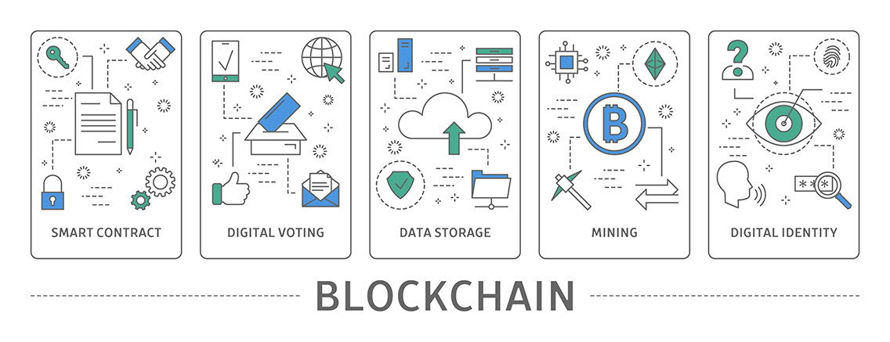

Blockchain as understood from an Expert
I have been working in distributed systems for decades. The fundamental problem when we have multiple active sources of information is finding a way to achieve consensus - agreement about what has happened. The simplest way to reach a consensus is to have one decision-maker. If there is only a single source of "truth" as to what happened, anyone else that wants to know queries that truth.
However, disparate decision-makers often control individual resources in the real world. The challenge is to ensure that all decision-makers involved in a given event agree on the outcome. In Computer Science, it is databases that first had to face this problem.
A single database can practice techniques that ensure the consistency of events. What this means is that even if multiple pieces of information within the database need to be modified to carry out a particular operation, it is possible to ensure that even in the face of failures, the information within the database is consistent and thus definitive.
A typical model I have used when teaching this basic concept is a bank machine that dispenses cash. If you walk up to that machine, insert your card, enter your pin, and ask to withdraw $20, multiple distinct bits of information must all happen, or none happen:
- You need to authenticate yourself (card + pin)
- Your account needs to be debited $20
- You need to be given $20 in currency
If anything fails in any of these steps, nothing should change: your card is returned to you, your account is not debited, and you don't receive your cash. Such an "in balance" system is said to be consistent.
Let's suppose that you use the ATM of a different bank than where your money is stored. Now we have distinct actors:
- You, with your card and pin
- The bank machine you are using
- The bank that owns the bank machine you are using
- The network that coordinates between the bank that owns the bank machine you are using
- Your bank, notably your account with that bank.
Everything needs to work correctly, but now you have distinct actors. Each bank trusts the network and has presumably been vetted so that the banks and the network are all trusted. So, when the bank machine you are using verifies that you have the card and know the PIN, however, that is done is enough for the network and your bank to trust that you are who you say you are. Then the steps to dispense your funds are the same. You don't get any cash if anything goes wrong, and your account isn't debited.
I chose a bank as the example because banks routinely use ledgers - a list of transactions that move funds between accounts - or into your hand. Electronic ledgers are a bit different than paper ledgers in that the latter is more difficult to change after the fact since that often leaves marks. Indeed, the best practice is not to change an incorrect entry but rather to add another transaction to the ledger to correct the previous error. So, for example, we might void a transaction by posting the inverse transaction to the ledger.
How can we know when an electronic ledger has been modified? First, we could record it in something difficult to change after the fact, such as write-once media. Another approach we can use is to break our ledger up into sets of transactions. Logically, you can think of this as being like a page within a ledger. For a computer, we can then compute a "checksum" over the values within that ledger. I won't bore you with the details, but it is possible to calculate such checksums to make it very difficult to change the records within the set and still end up with the same checksum. So, one way to protect an electronic ledger is to compute an additional value, called the "hash" or "checksum," that depends upon all of the ledger entries within a given set. If we publish the checksums in some fashion, we now have a way to know that the ledger has not been modified after the point the checksum has been published.
A blockchain adds one more bit of information to the ledger entries: it also incorporates the checksum of the prior set of ledger entries. In other words, if we think of our ledger as being a series of pages, the first entry on each new page happens to be the checksum of the previous page. Then we compute a checksum for the new page with all the transactions. This "chains together" these sets of transactions. Now, to change the value of an older ledger page requires changing every page after it. So we actually only need to publish the most recent checksum to verify the entire chain.
This is what creates a "blockchain." A "block" consists of:
- The checksum of the previous block
- A set of transactions;
- Any other data we want in the block;
From this, we can compute the checksum of the current block. The key to "preserving" this "blockchain" is publishing those checksums. That is (more or less) how blockchains like Bitcoin and Ethereum function. They have some additional steps, but they work by publishing the ledger pages with their checksums - the blocks that make up the chain. When enough "nodes" (computers) in the network accept a new block, it becomes "confirmed" and challenging to change. Since it is easy to compute those checksums, the blocks are easy to confirm. Changing an existing block on this chain does not work because nodes do not permit changing history. Anyone with the blockchain can confirm it. The other nodes will ignore someone that attempts to change it since the changes won't match the published information.
Thus, the real benefit of using a blockchain is that it provides a way to reach consensus and then confirm that consensus that is resilient in the face of bad actors. The simple implementations of blockchain generally require at least a majority of the participants to collude in order to rewrite the blockchain. On top of that, the cost of re-computing the blockchain, which is required to "change the past," goes up as the blockchain proceeds.
There is a fair bit of hype around blockchain; some are deserved. In future posts, I will discuss more about some of those uses, with an eye towards how I consider them as an expert.
